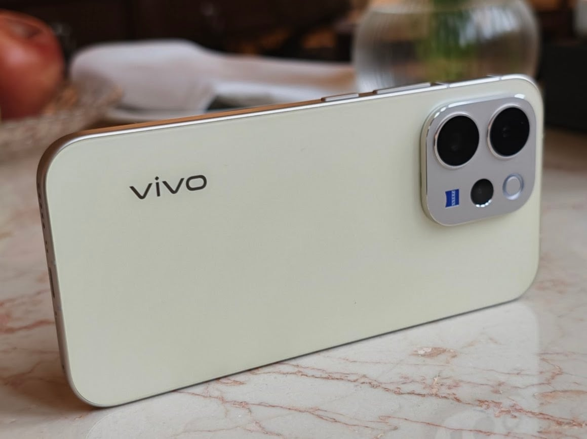
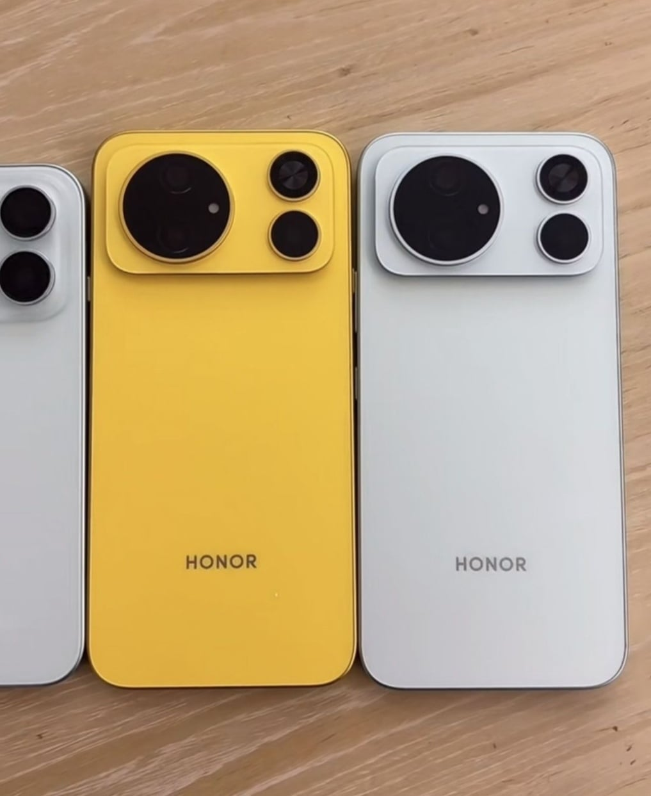
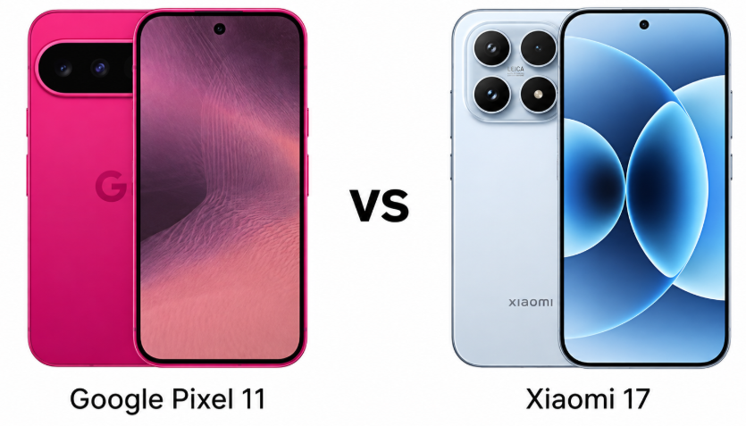
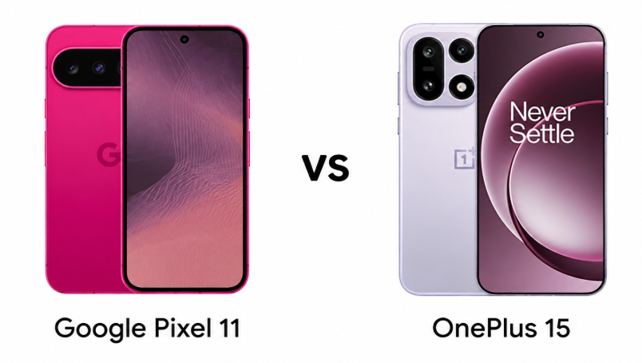

THE TECH EDIT
기술의 변화, 매일 한눈에.
카메라 · 스마트폰 · AI, 해외 테크 소식을 모아 전합니다.
최근 발행2026-09-15
새로 들어온 소식
LATEST STORIES최신 뉴스
전체 2,981개 기사Samsung, SK하이닉스, 한국전력의 25조 원 선결제 계획 거부: 반도체 호황 5년 지속 불확실성 때문
OPPO Find X10 시리즈 스마트폰 공개: 4가지 색상 디자인 발표, 9월 22일 전 세계 최초 출시
OPPO ColorOS 17의 새로운 테마 배경화면 공개, Find X10 시리즈 스마트폰에 최초 탑재
"업계 최고"를 표방하는 OnePlus 16 스마트폰, 멀티 터치 샘플링 속도 520Hz, 자이로스코프 샘플링 속도 최초 800Hz 달성
Omdia 데이터: 2026년 2분기 반도체 매출 4,250억 달러, 전 분기 대비 31.4% 증가하며 사상 최고치 기록
OM SYSTEM PEN 레트로 미러리스 M43 카메라, 중국 출시 가격 5999위안, 9월 19일 첫 판매
Motorola Moto G67s Power 스마트폰 벤치마크 유출: Dimensity 6400 칩, 4GB RAM
Motorola Edge 70 Neo 스마트폰 벤치마크 유출: 스냅드래곤 7s Gen 3 칩, 6GB RAM
마이크론, 샌디스크 한국서 반도체 핵심 인재 확보 경쟁, Samsung 임금 및 스톡옵션 인센티브 강화로 인재 유출 대응
배우 리셴, OPPO 수석 이미지 전문가 인증 추가… Find X10 시리즈 스마트폰 모델로 발탁될 듯
iQOO 16 스마트폰 핵심 디스플레이 사양 공개: 안드로이드 최초 M16 발광 소재, 10000니트 부분 피크 밝기 등
iQOO 16 스마트폰, 2K 165Hz 디스플레이 세계 최초 공개: M16 발광 소재, 전용 플래그십 생산 라인, Samsung 디스플레이와 공동 개발
최초로 '앱 듀얼 창'을 기본 지원하는 Apple 스마트폰, iPhone Duo 내부 화면에서 앱의 두 번째 독립 창을 열 수 있습니다
Huawei 바 타입 스마트폰 Pura X View, 30만 대 이상 판매되며 '대박'
Apple이 iPhone Duo를 출시한 지 4일 만에 Huawei 폴더블 스마트폰 Pura X Max 판매량이 지난주 대비 76.5% 급증한 것으로 알려졌다.

아너 매직 9 슈퍼 에디션, 11,000mAh 배터리, 스냅드래곤 8 엘리트 젠 5, 200MP 트리플 카메라 등 사양 유출
해리 포터 에디션 realme 16 Pro 스마트폰 사전 공개: Dimensity 7300 Max 칩, 7000mAh 배터리
세계 최초: 항저우 자런 반도체, 12인치 산화갈륨 결정 등경 성장 실현

구글 픽셀 11 vs 샤오미 17: 사양, 카메라, 배터리, 가격 비교

Google Pixel 11 vs OnePlus 15: 사양, 카메라, 배터리, 가격 비교
일본 자체 개발: Fujifilm의 "FUJITSU-MONAKA" CPU, 11월 출시 예정, 서버 제품은 내년 출하
검색 결과가 없습니다
다른 검색어를 입력하거나 필터를 초기화해 보세요.